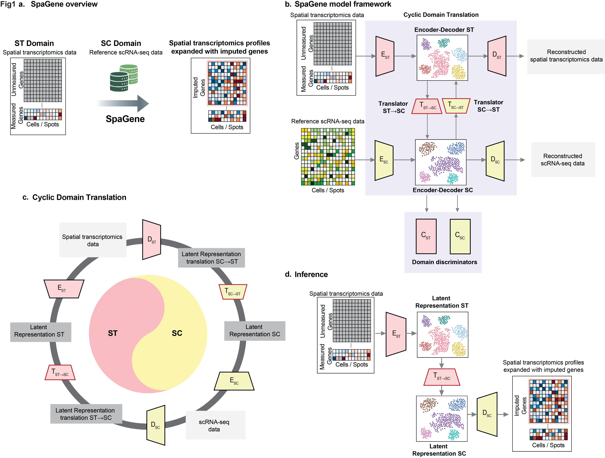
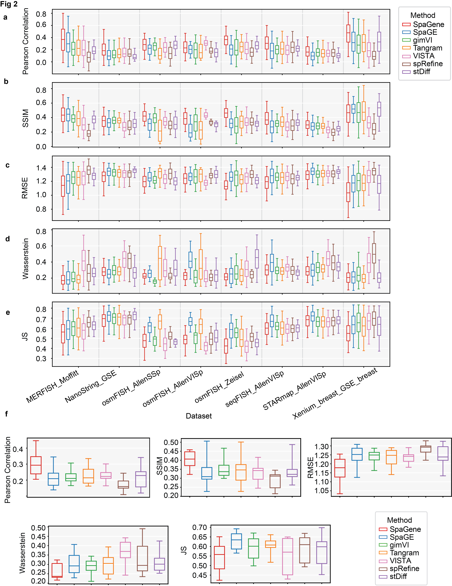
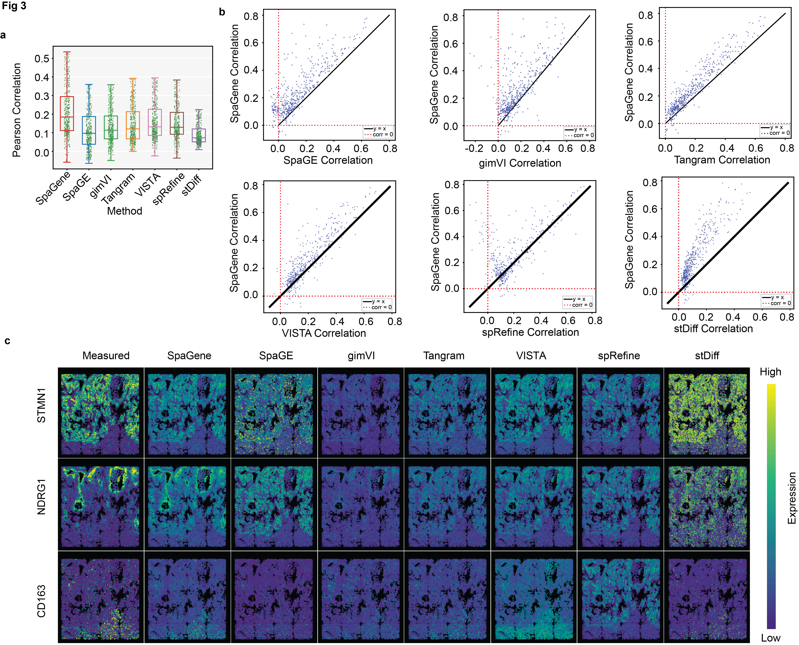
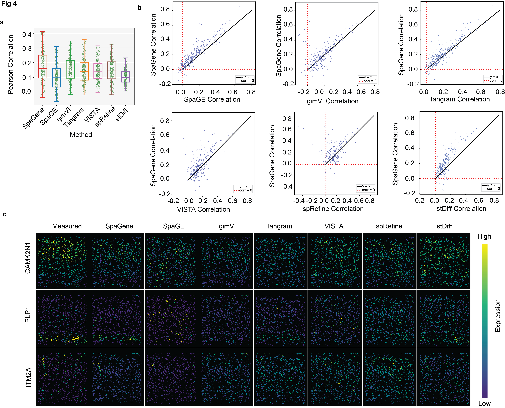

Abstract
Integrating transcriptome-wide single-cell gene expression data with spatial context significantly enhances our understanding of tissue biology, cellular interactions, and disease progression. Although single-cell RNA sequencing (scRNA-seq) provides high-resolution gene expression data, it lacks crucial spatial context, whereas spatial transcriptomics techniques offer spatial resolution but are limited in the transcriptomic coverage. To address these limitations, integrating scRNA-seq and spatial transcriptomics data is essential. We introduce SpaGene, a deep learning framework designed to integrate scRNA-seq and spatial transcriptomics data. SpaGene consists of two encoder-decoder pairs combined with two translators and two discriminators to effectively impute missing gene expression within spatial transcriptomics datasets. We benchmarked SpaGene against six representative methods across diverse datasets. Across dataset pairs under a controlled gene-holdout evaluation protocol, SpaGene improves average Pearson correlation coefficient (PCC) and cell-wise Structural similarity index (SSIM) and reduces Root mean squared error (RMSE) compared to the evaluated baselines, indicating more accurate recovery of held-out spatial gene expression. Application of our model to lung tumor tissue revealed spatial patterns consistent with immune cell enrichment at tumor boundaries, restricted myeloid cell presence in adjacent normal regions, and improved detection sensitivity of microenvironment-driven pathways linked to immune neighborhoods. These findings provide insight into immune exclusion and tumor-immune interactions motivating further biological validation.
The SpaGene Framework
SpaGene is designed to predict genes that are unmeasured in spatial transcriptomics by leveraging a reference single-cell RNA-seq dataset. The model combines modality-specific representation learning with latent-space translation to learn unique and shared features across ST and SC latent spaces. SpaGene recovers missing spatial gene expression under partial gene overlap and platform mismatch while preserving biologically relevant variation.

Figure 1. Overview of SpaGene. Panel a presents the overall objective of using reference single-cell data to predict unmeasured genes in spatial transcriptomics and produce enriched spatial profiles. Panel b shows the three core components: encoder-decoder modules, translators, and discriminators. Panel c highlights the bidirectional latent-space translation process between ST and SC domains, and panel d shows inference where ST data is projected, translated into the SC domain, and reconstructed to expand measured gene expression.
Benchmark Performance Across Datasets
We benchmarked SpaGene against six representative methods across eight dataset pairs and evaluated performance using PCC, SSIM, RMSE, Wasserstein distance, and Jensen-Shannon divergence. Across the benchmark, SpaGene showed more accurate recovery of held-out spatial gene expression under the same evaluation protocol.

Figure 2. SpaGene compared with six representative methods across eight dataset pairs. Panels a to c summarize PCC, SSIM, and RMSE across benchmarks, panels d and e show the complementary distribution-based metrics Wasserstein distance and Jensen-Shannon divergence, and panel f summarizes average performance across datasets. SpaGene consistently improves PCC and SSIM while reducing RMSE under identical gene-holdout splits.
NanoString Lung9 rep1
On the NanoString Lung9 rep1 sample, SpaGene achieved stronger agreement with measured spatial expression than the compared methods. Average PCC and gene-level comparisons show that SpaGene better reconstructs representative spatial patterns.

Figure 3. Reference evaluation on the NanoString Lung9 rep1 sample. Panel a shows the box plot of PCC for each competing method. Panel b shows the scatter plot of PCC values for each imputed gene, where points above the y = x line indicate better performance for SpaGene. Panel c shows the spatial patterns for STMN1, NDRG1, and CD163 for each method. The High/Low color scale is provided as a visual guide and is not a shared quantitative scale across methods. In each panel, color intensity should be interpreted relative to the panel’s own expression range. Therefore, the visual comparison is intended to assess spatial pattern recovery rather than absolute expression magnitude across methods.
STARmap_AllenVISp
We further evaluated SpaGene on the STARmap_AllenVISp dataset to assess predictive accuracy under a distinct spatial transcriptomics setting. SpaGene achieved higher PCC and more faithful spatial recovery for representative genes than the competing methods.

Figure 4. Reference evaluation on the STARmap data. Panel a shows the box plot of PCC for each competing method. Panel b shows the scatter plot of PCC values for each imputed gene between SpaGene and each competing method. Panel c shows the spatial patterns of measured genes CAMK2N1, PLP1, and ITM2A for each method. The High/Low color scale is provided as a visual guide and is not a shared quantitative scale across methods. In each panel, color intensity should be interpreted relative to the panel’s own expression range. Therefore, the visual comparison is intended to assess spatial pattern recovery rather than absolute expression magnitude across methods.
Biological Insights from Imputed Genes
Beyond imputation accuracy, SpaGene supports downstream biological analysis by expanding transcriptome coverage in spatial data. In the NanoString Lung9 rep1 sample, the imputed profiles help reveal immune-rich tumor boundary regions and pseudotime-associated immune neighborhood patterns while improving detection of microenvironment-driven pathways, including immune, cell migration, and cell attachment pathways.

Figure 5. Downstream biological analysis on the NanoString Lung9 rep1 sample. Panel a displays cell types and inferred spatial niches. Panel b presents UMAP and ridge density views of tumor niche cells ordered by pseudotime and grouped by lymphocyte or myeloid neighbor proportion. Panel c maps these neighborhood patterns back onto the tissue and across selected FOVs to highlight immune-rich regions near tumor boundaries. Panel d shows pathway enrichment comparisons for lymphocyte-associated and myeloid-associated neighborhoods using imputed versus raw expression data, with pathway points colored by annotation and the dashed line indicating y = x.
Citation
SpaGene: A Deep Adversarial Framework for Spatial Gene Imputation
Aishwarya Budhkar, Juhyung Ha, Qianqian Song, Jing Su, Xuhong Zhang
bioRxiv 2025.10.03.680242; doi:
https://doi.org/10.1101/2025.10.03.680242
@article{budhkar2025spagene,
title={SpaGene: A Deep Adversarial Framework for Spatial Gene Imputation},
author={Budhkar, Aishwarya and Ha, Juhyung and Song, Qianqian and Su, Jing and Zhang, Xuhong},
journal={bioRxiv},
year={2025},
elocation-id={2025.10.03.680242},
doi={10.1101/2025.10.03.680242},
url={https://www.biorxiv.org/content/10.1101/2025.10.03.680242v1}
}